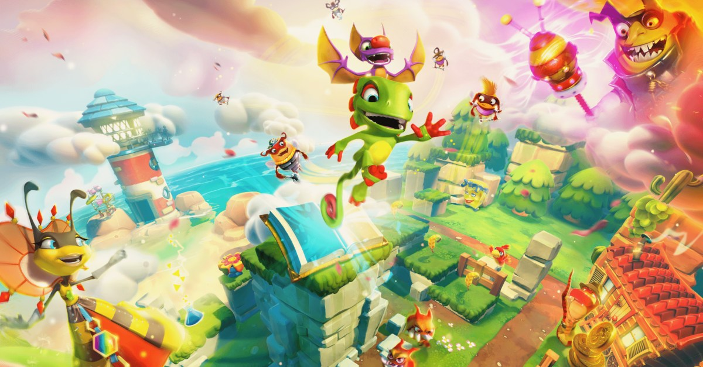

Technology · 28 Nov 2026
Yooka-Laylee’s free upgrade is skipping Xbox

Playtronic Games is getting ready to launch Yooka-Laylee and the Impossible Lair: Definitive Edition as a free update on PlayStation 5, Switch 2, and PC on December 15th. Unfortunately for Xbox owners, the developer says it "can't commit to any additional platforms for the foreseeable future." In a
Multiple independent publishers are reporting on the same development: Yooka-Laylee’s free upgrade is skipping Xbox.
The available reports place the development in the Technology category. The accounts were compared for agreement on the central event rather than simply shared names or broad topics.
One of the available reports describes the development this way: Playtronic Games is getting ready to launch Yooka-Laylee and the Impossible Lair: Definitive Edition as a free update on PlayStation 5, Switch 2, and PC on December 15th. Unfortunately for Xbox owners, the developer says it "can't commit to any additional platforms for the foreseeable future." In a statement posted on X, Playtronic said that […]
Readers should consult the linked source reports for additional context, updates and details that may change as the story develops.
Sources
This article was produced by the C. O. Eric AI Newsroom from the cited sources. It is published only after automated evidence and safety checks.